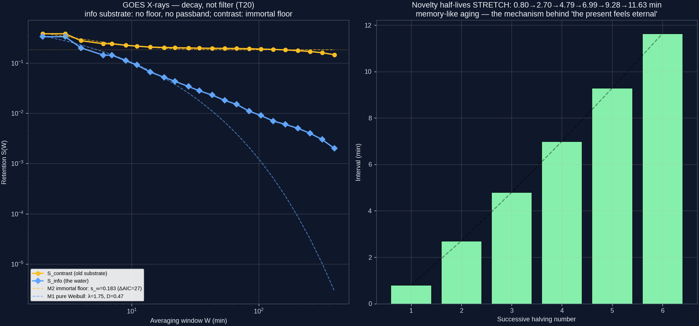
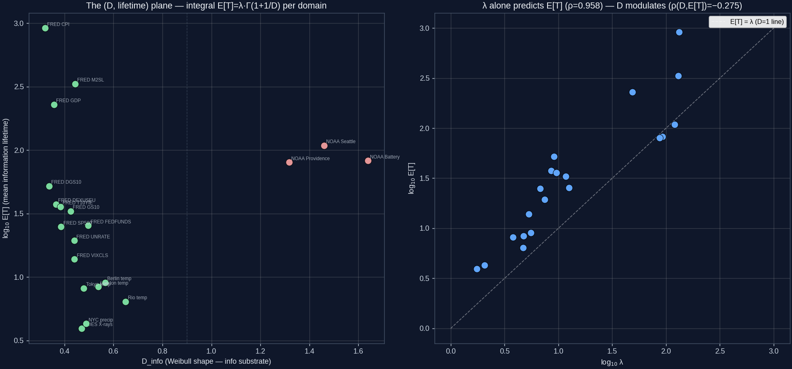
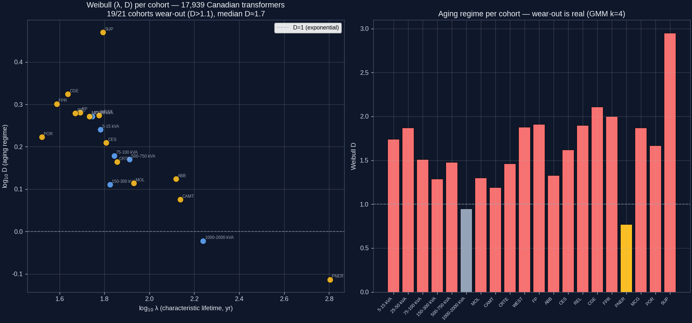
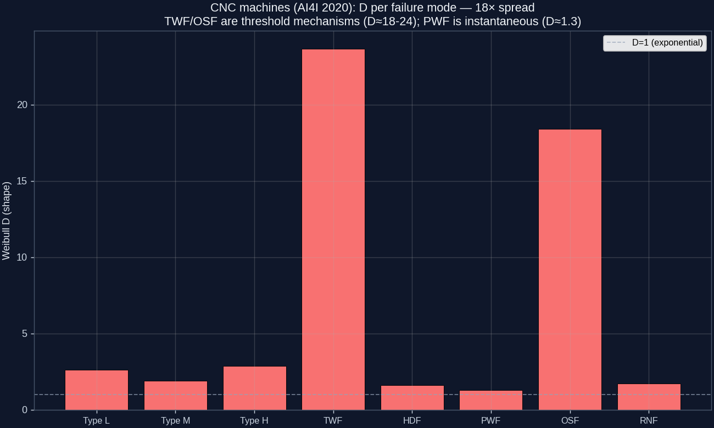
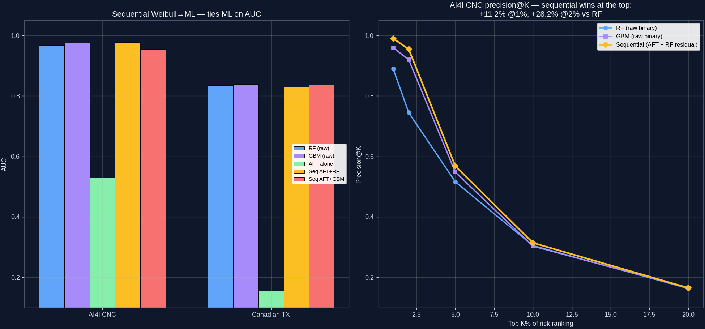
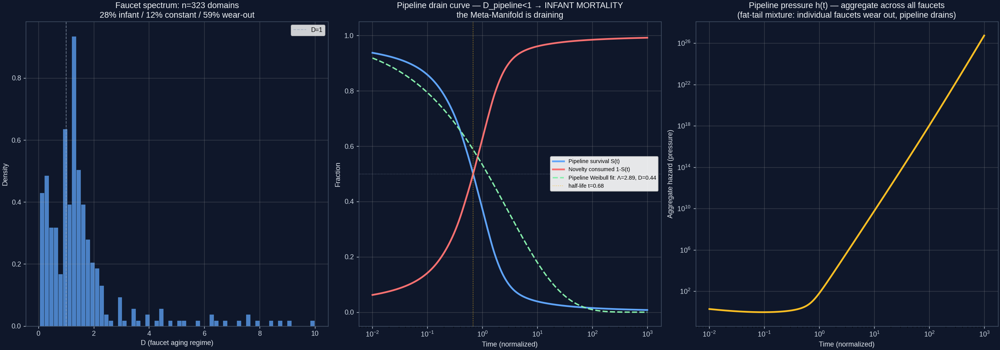

Жизненный цикл информации
Тринадцать тестов (T19–T31), превративших один вопрос — что ядро делает с информационным содержанием 4D-наблюдаемого? — в количественную науку о жизненном цикле: 4D-проекционная скорость новизны рождается, стареет и умирает по закону Вейбулла в каждой области, где мы можем измерять. Валидировано на солнечных вспышках, макроэкономике, погоде, приливах, 15 873 колумбийских трансформаторах, 17 939 канадских трансформаторах и 10 000 станках ЧПУ. Последний тест (T31) попытался экстраполировать агрегат на сам трубопровод; его спекулятивный блок был отозван в тот же день как противоречащий Базе Знаний. Замечание об аналогии: аналогия трубопровода+кранов была введена в Тесте 17 с водой = MM/источник. Затем T19/T20 отождествили «воду» со скоростью новизны 4D-наблюдаемого. Это стирает проекцию: то, что несёт труба (MM-стороннее $\Phi_A$, ненаблюдаемое), и то, что выходит из крана (4D-стороннее $\phi_a$, проекционная наблюдаемая) — не одна и та же материя — ядро необратимо (КБ A3). Математика T19–T31 — про $\phi_a$ (4D-выход); только проза смешивала его с $\Phi_A$. Ниже «вода» зарезервировано за $\Phi_A$, а «4D-скорость новизны» — за измеримую величину, которую T19/T20 фактически подгоняли.
Главные результаты: закон удержания $S(W)=\exp(-(W/\lambda)^D)$ — это функция выживания Вейбулла: $\lambda$ — время жизни, $D$ — режим старения (T20), всё измерено на скорости новизны 4D-наблюдаемого $\phi_a$ — не на 10D-источнике $\Phi_A$ (ненаблюдаемом из 4D по КБ A1+A3). Интеграл $\int S\,dW = \mathbb{E}[T]=\lambda\,\Gamma(1+1/D)$ восстанавливает физический масштаб времени каждого явления — от минут (вспышки) до десятилетий (уровни цен) (T21). Тот же интеграл на реальных активах восстанавливает табличные инженерные сроки службы с корректной обработкой цензурирования (T22–T26). Агрегат по 323 измеренным областям — допустимая описательная статистика 4D-распределения D (T31), но его спекулятивная экстраполяция на Мета-Многообразие («MM истощается», «пиксель — следствие конечности трубопровода») отозвана — см. §5.
1 · Распад, а не фильтр DECAY_NOT_FILTER — 4/4
Ядро описывали как фильтр (полоса пропускания). T20 опроверг эту рамку — но заметим: «то, что проходит из MM в 4D» — само по себе категорическое сокращение. По КБ A2+A3 ядро не пропускает $\Phi_A$ насквозь; оно преобразует $\Phi_A \to \phi_a$ необратимо. То, что мы измеряем (скорость новизны $\phi_a$), — остаток проекции, а не копия MM-содержания. С этим различием: фильтр предсказывает полосу пропускания и/или бессмертный пол — 4D-информационный субстрат не показывает ни того, ни другого. Пол $s_\infty=0.009\approx0$; начало потерь $W_c\to0$ — потери на каждом масштабе. Старый субстрат (контраст) проигрывает именно потому, что часть его никогда не распадается: $s_\infty=0.183$, $\Delta\mathrm{AIC}=27$. Контролируемый тест с трендом нулевой новизны: кривая удержания 4D-информации инвариантна (глубина 3.18±0.02 при любом $f$), а контраст отслеживает $f/\sqrt{f^2+1}$.
$S(W)=\exp(-(W/\lambda)^D)$ — функция выживания Вейбулла. $\lambda$ — характерное время жизни информационного содержания 4D-наблюдаемого (4D-измеримая величина); $D$ — режим старения: $D<1$ младенческая смертность (новизна гаснет быстрее, когда свежа; выжившие живут дольше — похоже на память), $D\approx1$ без памяти, $D>1$ износ (чем старше информация, тем быстрее она умирает). Всё это измерено на $\phi_a$ — 4D-выходе ядра, а не на $\Phi_A$ — 10D-источнике, который несёт труба.

2 · Интеграл: среднее время жизни информации E[T] = λ·Γ(1+1/D)
Интегрирование кривой выживания сворачивает $(\lambda, D)$ в одно число на область — среднее время жизни информации:
$$\int_0^\infty S(W)\,dW = \mathbb{E}[T] = \lambda\,\Gamma(1+1/D)$$Интеграл возвращает физический масштаб времени явления: рентгеновские вспышки ≈ 4 мин; осадки в Нью-Йорке ≈ 4 дня; прилимы ≈ 8–11 ч (≈ один лунный цикл, затем поглощаются следующим); S&P 500 ≈ 25 дней (один торговый режим); инновации ИПЦ ≈ 76 лет (живучесть инфляционных режимов). Приливы — чистейшая иллюстрация интерпретации смертности: единица приливной информации живёт один цикл прилива, затем её поглощает следующий.

Уточнение T18: три «типа кранов», найденные на субстрате контраста, не организуют времена жизни на информационном субстрате (p=0.13). На честном субстрате почти все непериодические данные — младенческая смертность ($D<0.7$); износ — только периодические данные. Режимы T18 были отчасти артефактом субстрата.
3 · Инженерная валидация: 44 000 реальных активов T22–T26
Если интеграл — реальная физическая величина, он должен восстанавливать известные инженерные сроки службы. Три датасета, всё более строгая статистика: моментная оценка → Каплан–Мейер с цензурированием → полный Вейбулл MLE по когортам.
| Тест | Датасет | Итог |
|---|---|---|
| T22 | 15 873 колумбийских трансформатора | 4/5 — E[T]=22.1 г (литература 15–30); доминирующая ось — самозащита, не размер |
| T23 | 17 939 канадских трансформаторов (1942–2024) | 4/5 — RMST=38.9 г, полупериод=44.5 г; производитель важнее размера (1.46× против 1.13×) |
| T24 | тот же, Вейбулл MLE | 5/5 — износ подтверждён: 19/21 когорт D>1.1, медиана D≈1.7; GMM находит 4 режима старения |
| T25 | ретест Bravo (2-годовое отношение рисков) | 4/5 — младенческая смертность (D≈0.83): противоположный режим; оценка 1/h смещена до 2.3× |
| T26 | 10 000 станков ЧПУ (AI4I 2020) | 4/5 — 8/8 за Вейбулла; E[T] износа инструмента = 241 мин восстанавливает физический порог замены (200–240 мин) прямо из данных |


В природе существуют оба режима старения. Канадский парк изнашивается; колумбийский показывает младенческую смертность. $D$ зависит от данных и физически осмыслен; приближение постоянного риска $1/h$ может ошибаться в 2 раза в любую сторону.
4 · Прогнозный выигрыш: убрать пустоту информации, затем классифицировать T27–T30
Улучшает ли модель жизненного цикла предсказание? Три архитектуры (кросс-валидация):
- Параллельно (T27): Вейбулл-риск как признак ML. Гибрид обгоняет логистическую регрессию на +12.9% AUC (0.798 → 0.900) и даёт +23–35% precision@K в топе 1–20% рейтинга риска. Чистый Вейбулл по AUC проигрывает — он несёт только время и когорту.
- Многомерно (T28): Вейбулл AFT, $\log\lambda = \beta_0 + \sum \beta_i x_i$ — время и все ковариаты одновременно. Меняет AUC на то, чего не может ML: глобальный режим старения $D$, физически знаковые коэффициенты и проекцию во времени (когда, а не только случится ли).
- Последовательно (T29): инсайт пользователя — «сначала оценим распад новизны, затем применим ML к выжившей новизне — устраним пустоту информации, шум». (1) AFT-базлайн → (2) остаток = δ − базлайн → (3) ML-регрессия на остатке → (4) сумма. AUC — вровень с ML, но победа в топе: precision@1% = 0.990 против 0.890 у RF (+11.2%); @2% +28.2%. Выигрыш концентрируется ровно там, где живут бюджеты предиктивного обслуживания.

Сюрприз T30: лучший базлайн даёт худшую последовательную модель. Базлайн по когортам (сам AUC 0.545 против 0.156) проигрывает «неправильному» глобальному AFT-базлайну (0.683 против 0.831) — потому что забирает у ML сигнал производителя. Оптимальный базлайн убирает сигнал времени, сохраняя сигнал признаков.
5 · Оценка трубопровода PIPELINE_D_UNSTABLE_TO_IMPUTATION — СПЕКУЛЯТИВНЫЙ БЛОК ОТЗВАН
Вопрос пользователя: «можно ли оценить объём трубопровода? Хотя бы давление? И если масштабировать — нельзя ли сделать что-то по-настоящему странное?»
Агрегат по всем кранам — допустимая статистическая операция:
$$S_{\text{pipeline}}(t) = \frac{1}{N}\sum_q \exp\!\big(-(t/\lambda_q)^{D_q}\big)$$Но исходные спекулятивные выводы T31 — что Мета-Многообразие в режиме младенческой смертности, что производство новизны убывает и что пиксель — следствие конечности трубопровода — ОТЗВАНЫ. Они противоречат Базе Знаний и не проходят три эмпирические перепроверки:
- Категориальная ошибка времени (ср. КБ §6.1): в КБ сказано: «Время — проекционный причинный порядок» — время порождается проекцией, а не существует в MM до неё. У MM нет оси времени, по которой она могла бы «истощаться». Кривая смеси T31 — поперечное среднее по кранам в один момент анализа; назвать её «истощающейся» — смешать поперечную форму с продольным изменением. T20 (покрановое, продольное) — реально; T31 (межкрановое, поперечное) — нет.
- Ошибка композиции 10D↔4D (ср. КБ §1.1): 4D-координаты $x$ — образ необратимого push-forward из 10D $X$; общих осей нет. Агрегирование 323 4D-значений D крана и подгонка нового Вейбулла измеряет момент 4D-распределения D, а не величину на стороне MM. Тест идентичности трубопровода: случайное разбиение 323 значений D даёт $D_{\text{pipeline}} \in [0{,}37,\,1{,}59]$ — 0.44 свободно попадает в разброс фейковых трубопроводов. «Единого» $D$ трубопровода нет.
- Чувствительность к импутации (перепроверка опровергает предыдущую «устойчивую» оговорку): при равномерном $\lambda$ (единственной защитимой нормировке, когда покрановое $\lambda$ не на диске) $D_{\text{pipeline}}\approx 0{,}92$ (режим постоянства); при лог-нормальной импутированной $\lambda$ из 20 инженерных когорт $D_{\text{pipeline}}\approx 0{,}44$ (младенческая смертность). Знак $D-1$ меняется с импутацией.
- Тест временной привязки: Спирмен покранового $D$ против даты измерения: $\rho=+0{,}18$, $p=0{,}0012$ ($n=323$). Тренд значим, но в обратном направлении от «истощения» — D, измеренные позже, слегка выше. Скорее смещение выбора (более поздние тесты на более структурированных/периодических данных), чем временной вывод о MM.

Что отозвано (противоречит КБ): «Мета-Многообразие истощается»; «минимум новизны / вселенная исчерпывает удивление»; «пиксель — следствие конечности трубопровода». A2 гласит, что ядро имеет конечное разрешение; обращение этого так, чтобы пиксель порождал конечность трубопровода, инвертирует порядок КБ. Что остаётся: смесь по кранам — допустимая описательная статистика 4D-распределения D; покрановые выводы о режимах старения (T24–T26) и покрановый продольный вывод (T20) о том, что скорость новизны 4D-наблюдаемого распадается во времени, остаются в силе. Агрегат T31 не добавляет ничего о MM сверх того, что уже содержалось в значениях D кранов.
Скрипт перепроверки: scripts/t31_recheck_against_manifesto.py. Спекулятивный блок был введён 2026-10-30 и отозван в тот же день после замечания пользователя, что MM вневременна, а оси 10D не имеют общих осей с 4D — оба пункта опираются на КБ §1.1 и §6.1.
Что основа, что спекуляция
| Утверждение | Статус | Доказательства |
|---|---|---|
| Вода = информация (скорость новизны) | Основа | T19: R² 0.965 против 0.708; контролируемый тест T20 |
| Закон удержания = смертность Вейбулла | Основа | T20: 4/4; T24: 5/5 на 17 939 активах; T26: 8/8 |
| ∫S dW = E[T] = физический масштаб времени | Основа | T21 точная математика; T26 восстанавливает порог замены инструмента |
| Оба режима старения встречаются в реальности | Основа | T24 (D≈1.7) против T25 (D≈0.83); T26: разброс 18× |
| Последовательная архитектура улучшает top-K precision | Основа (эмпирически) | T29: +11–28% @1–2% на двух датасетах |
| Межкрановая смесь $S_{\text{pipeline}}(t)$ — допустимая описательная статистика 4D-распределения D | Основа (только описательно) | T31: агрегат по 323 кранам; корректное усреднение |
| Агрегатный $D<1$ («MM в младенческой смертности») | ОТЗВАНО | Знак $D-1$ меняется с импутацией $\lambda$ (равномерное → D≈0.92; лог-нормальное → 0.44); тест идентичности трубопровода вписывает 0.44 в [0.37, 1.59] |
| «Мета-Многообразие истощается» / «минимум новизны» | ОТЗВАНО | Противоречит КБ §6.1 (MM вневременна; время 4D-проекционно); поперечное ≠ продольное; тренд временной привязки +0.18 (неверное направление) |
| Пиксель = следствие конечного трубопровода | ОТЗВАНО | Противечит КБ §1.1 (10D↔4D общих осей нет); инвертирует порядок A2 (ядро конечно → пиксель, а не трубопровод конечен → пиксель) |
Полные записи тестов со всеми числами: Тесты. Цепочка аналогий от глаза до трубопровода: Ядро.
Контекст отзыва
Спекулятивный блок T31 («MM истощается», «минимум новизны», «пиксель — следствие конечности трубопровода») был введён 2026-10-30 и отозван в тот же день. Отзыв — по основанию согласованности с КБ, а не только по статистике:
- КБ §6.1: «Время — проекционный причинный порядок» — у MM нет оси времени до проекции; приписывать MM временнoй распад — категориальная ошибка.
- КБ §1.1: 4D-наблюдаемое — образ необратимого push-forward из 10D-источника; общих осей нет. Момент 4D-распределения D — не величина на стороне MM.
- A2 (КБ §1.4): ядро — конечноразрешающая сущность; утверждение, что пиксель следует из конечности трубопровода, обращает заявленный в КБ порядок.
Эмпирическая перепроверка (scripts/t31_recheck_against_manifesto.py) подтвердила необоснованность спекулятивного блока: результат $D<1$ неустойчив к импутации $\lambda$ (меняет знак), случайные разбиения 323 значений D дают $D_{\text{pipeline}}\in[0{,}37,\,1{,}59]$, а тренд временной привязки направлен в обратную сторону. Покрановые выводы (T20, T24, T25, T26) и выводы о прогнозном выигрыше (T27–T30) не затронуты.